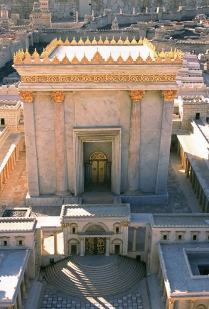

A House Full of Angels
What’s the point of seeing the Beis HaMikdash on Shabbos Chazon if on that very day it is destroyed, G-d forbid?! * “One who does not strive to fulfill the mission to bring tzaddikim to t’shuva is as if he did not fulfill the shlichus of his Master” * Our job is to inspire everyone to heightened enthusiasm and wonderment in the awesome time we live in, the threshold of Redemption.

Are you going to see the Beis HaMikdash on (or before) Shabbos Chazon? I certainly hope so – and may it remain in sight throughout the week, the month, and forevermore, as the Rebbe cries out: “Each generation that does not build the Beis HaMikdash in its days is considered as if that generation destroyed it”! But what’s the significance of seeing the Beis HaMikdash on Shabbos Chazon if on that very day it is destroyed, G-d forbid?!
***
“One who does not strive to fulfill the mission to bring tzaddikim to t’shuva is as if he did not fulfill the shlichus of his Master” (Zohar III 153a). That is the mission of Moshiach himself, isn’t it? “L’asava tzadikaya b’siuvta – to bring the righteous to repentance.”
Also, everyone is quick to quote Tanya as the source for saying we are all pretty much r’sha’im. We’re the bad guys. How can we possibly have the mission of getting tzaddikim to do t’shuva? Where will we even find one!
The Rebbe spoke about tzaddikim doing t’shuva in the following sicha:
The revolutionary concept that t’shuva pertains even to tzaddikim emerged from the teachings of Chassidus. Prior to Chassidus, this idea was completely unknown. Everyone held that repentance is solely in response to sin and transgression. It’s clearly irrelevant to a tzaddik, who learns Torah and fulfills Mitzvos, especially a tzaddik gamur, a perfect tzaddik, who has no negativity in him at all (ein bo ra klal), as it says in Tanya. Struggling with seeing how it applies to him, the tzaddik asks – repent for what?!
Toras HaChassidus reveals that in whatever space a person is – even if he is a tzaddik gamur – he must know that he is “poor” and he must be totally battel, selflessly devoted to G-d, and return to Him through repentance.
Consider the story of the Alter Rebbe with one of his illustrious prodigies, an illui, a genius in both Nigla and Kabbala (HaYom Yom Tammuz 27). The illui asked, “Rebbe, what am I lacking?”
The Alter Rebbe answered, “You lack nothing. You are G-d-fearing and a scholar. You must simply remove the “chametz,” the “leaven,” which is yeshus (ego) and pride, and bring in matza, bittul (renunciation of self).
An implement, such as a roasting-spit, that may have been used for ego, as the person conceives himself as being אור [ur, fire, but in this sense it also means ohr] “light” [feeling pride for being a source of goodness] – this pride repels the Sh’china, for “he and I (G-d) cannot dwell together.” Such an implement must be purged through white hot fire to the point that “sparks” of birurim (purification) fly out and are absorbed in the true light.”
Although the Alter Rebbe agreed that the illui lacks nothing, he told him that he requires the greatest purge – libun b’ur, total transformation.
In the same way, the Baal Shem Tov captivated the Maggid [inspiring him to become his disciple and successor], as in the well-known story of when the Maggid came to the Baal Shem Tov: The Baal Shem Tov asked the Maggid to interpret a topic discussed in [the kabbalistic work] Eitz Chayim. The Maggid began to elaborate several interpretations, but the Baal Shem Tov said that it still was not the true interpretation.
The Maggid responded that in his opinion it is the correct interpretation, and if the Baal Shem Tov has a different one – adaraba, he should present his view.
The Baal Shem Tov proceeded to elucidate the words of the Eitz Chayim with a fiery zeal that was simply spectacular, creating such spiritual revelations that all the angels and yichudim discussed in the Eitz Chayim materialized there and filled the room.
The Baal Shem Tov then told the Maggid that his interpretation is actually true, but his delivery lacked passion and zeal.
That is how the Baal Shem Tov took the Maggid on as a disciple. Although his interpretation was genuine and truthful, it needed to be impassioned and fiery. Striving to attain this zeal characterizes the t’shuva of tzaddikim.
(Toras Menachem Hisvaaduyos Vol. 29, pg. 156)
***
How am I to emulate the Baal Shem Tov and bring the likes of the Mezritcher Maggid to do t’shuva, inspiring them to fill the room with fiery zeal?
It says in Shem MiShmuel (VaYishlach 2:4):
Following the t’shuva accomplished through Moshiach ben Yosef, everyone will become tzaddikim and everyone will take part in the mission “l’asava tzadikaya b’siuvta – to bring the righteous to repentance.”
On this basis, the role of Moshiach ben Yosef resembles plowing to soften the earth in order to receive the seed through Moshiach ben Dovid, as the verse states: “Behold, I send My messenger and he shall clear the way before Me. All of a sudden he will come to his Master’s palace, which you seek, etc.” (Malachi 3:1)
***
The good side of this topsy-turvy world of determining on a daily basis whether we build the Beis HaMikdash or the opposite, G-d forbid, the flip-side of the urgency of the situation and the very high stakes, the building of the ultimate dwelling place for G-d in this world, is that we have the power to ker a velt haint! The vision can be made tangible – in a single day!
Our job is to bring out the tzaddik in ourselves and others around us, inspiring everyone to heightened enthusiasm and wonderment in the awesome time we live in, the very threshold of Redemption.
And how are we going to do that? As the Rebbe teaches: with fire. ■
Rabbi Boruch Merkur. "A House Full of Angels." Beis Moshiach, no. 1177 (August 8, 2019).